Passioni
🎣 Pesca
Vicino all'acqua si schiarisce la testa. Per un momento spariscono scadenze, telefoni e traffico — restano solo acqua, lenza e attesa. Così me la immagino io.
Cosa mi piace
La pesca per me non riguarda il pesce, riguarda lo stare vicino all'acqua. Mattina presto, nebbia sulla superficie, silenzio rotto solo da uno schizzo o dal segnalatore di abboccata — è un riposo che non ho mai dietro al volante.
Stagionalmente qualche uscita all'anno, di solito con un amico o da solo. Località classiche come Doksy e posti simili nella Boemia del nord.
📸 Galleria
Doksy — settembre 2019
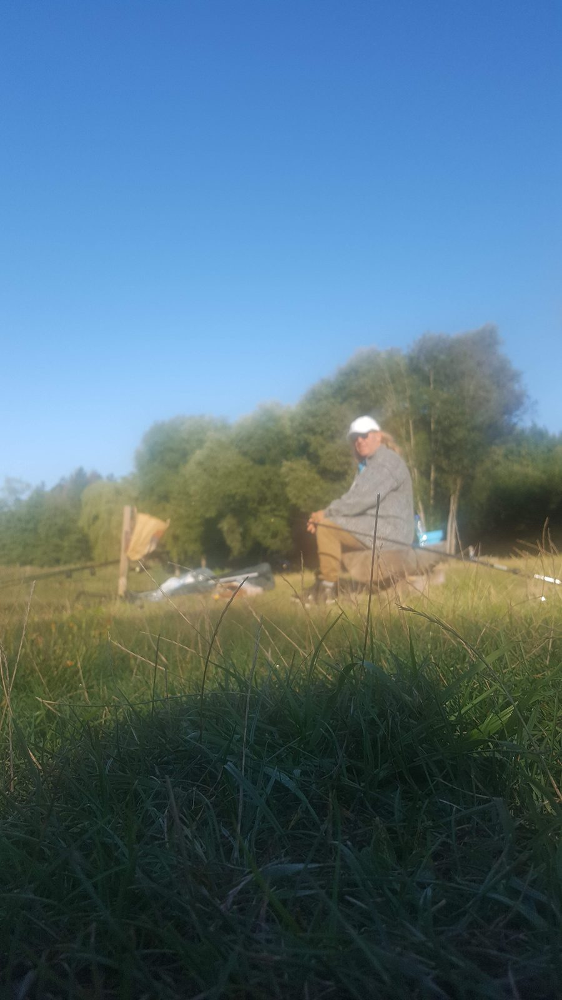
Un pescatore seduto sulla riva di uno stagno con un guadino (settembre 2019)
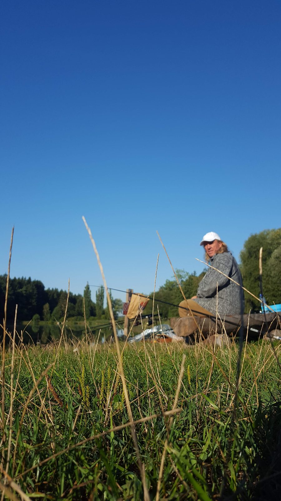
Un pescatore seduto sulla riva di uno stagno tra le canne (settembre 2019)
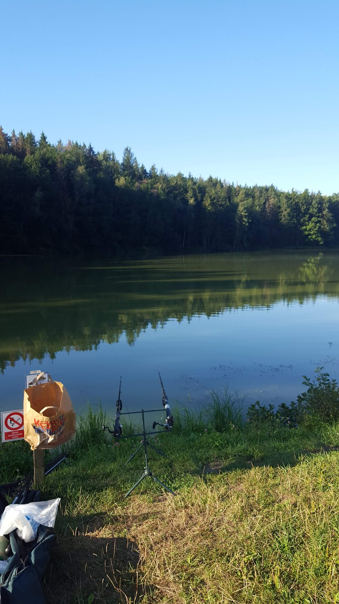
Uno stagno circondato dal bosco con canne su supporti sulla riva (settembre 2019)

Un pesce catturato disteso sull'erba vicino alla riva (settembre 2019)
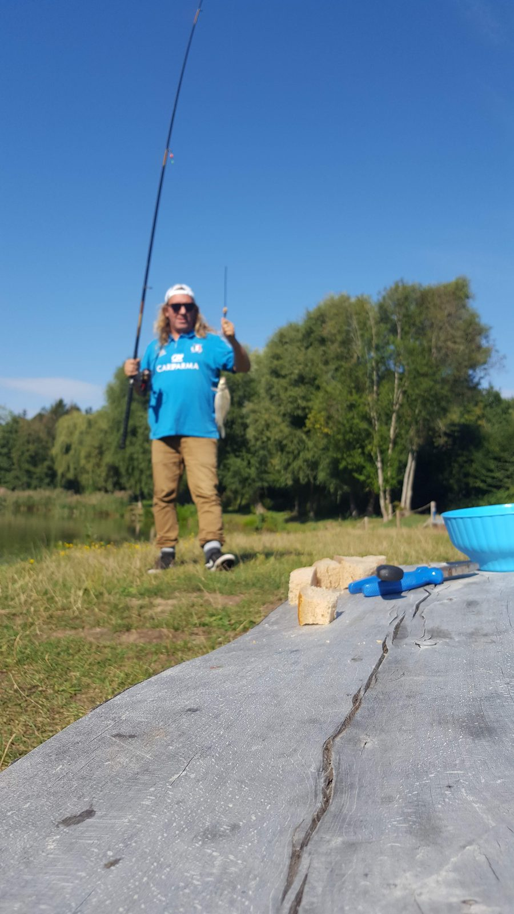
Un pescatore con una lunga canna sulla riva di uno stagno (settembre 2019)
Doksy — agosto 2020

Un'auto parcheggiata sulla riva di uno stagno accanto all'attrezzatura da pesca (agosto 2020)
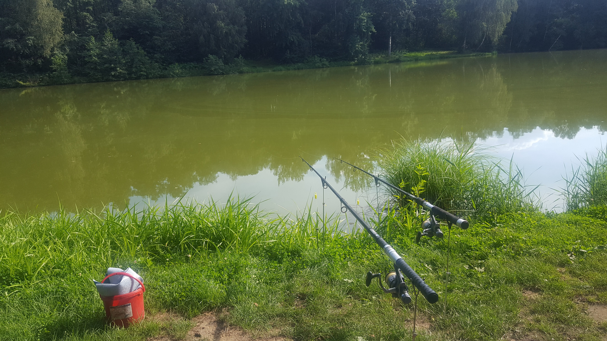
Due canne appoggiate sulla riva di uno stagno (agosto 2020)
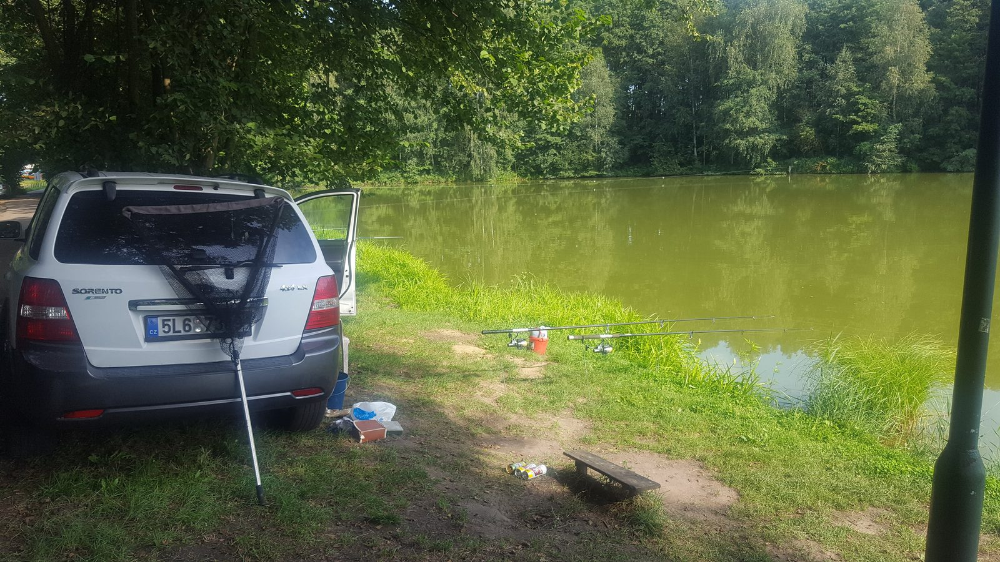
Un'auto parcheggiata vicino a uno stagno con canne messe in acqua (agosto 2020)
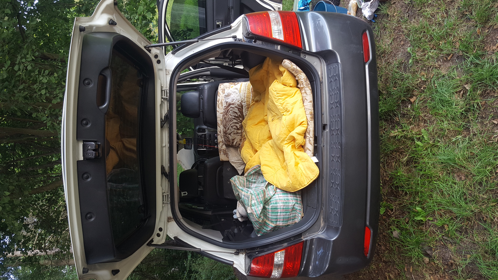
Il bagagliaio aperto di un'auto con coperte e attrezzatura vicino a uno stagno (agosto 2020)
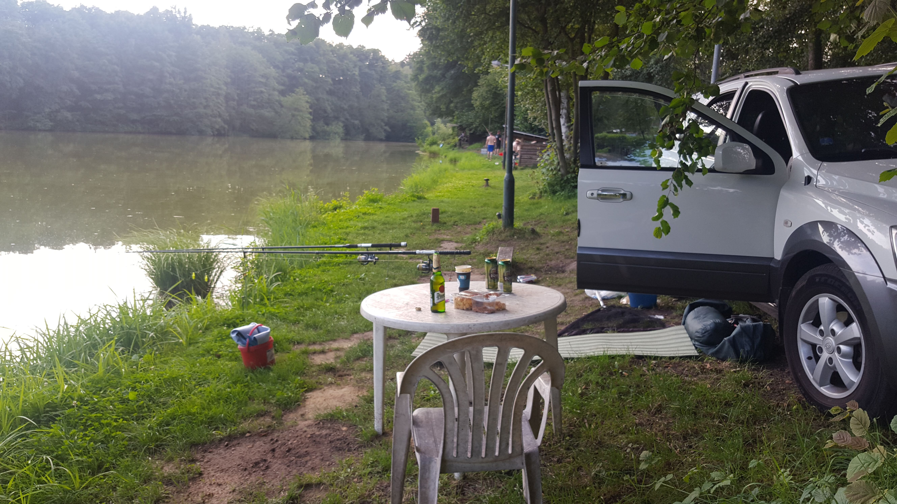
Un tavolo e una sedia sulla riva di uno stagno con un'auto a destra (agosto 2020)
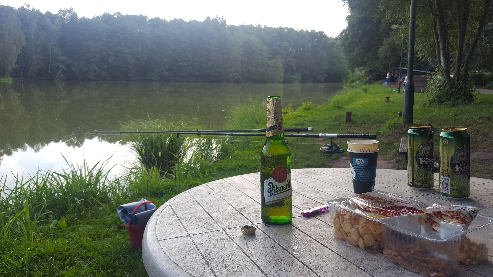
Un tavolo con snack e birra vicino a uno stagno, canne sullo sfondo (agosto 2020)
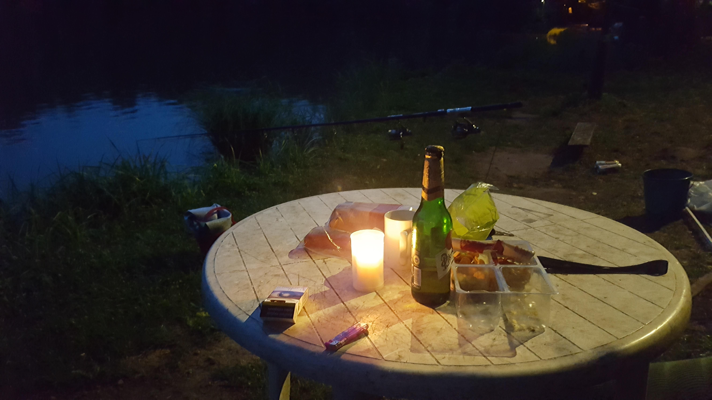
Un tavolo illuminato da una candela vicino a uno stagno dopo il tramonto (agosto 2020)
Estate 2024
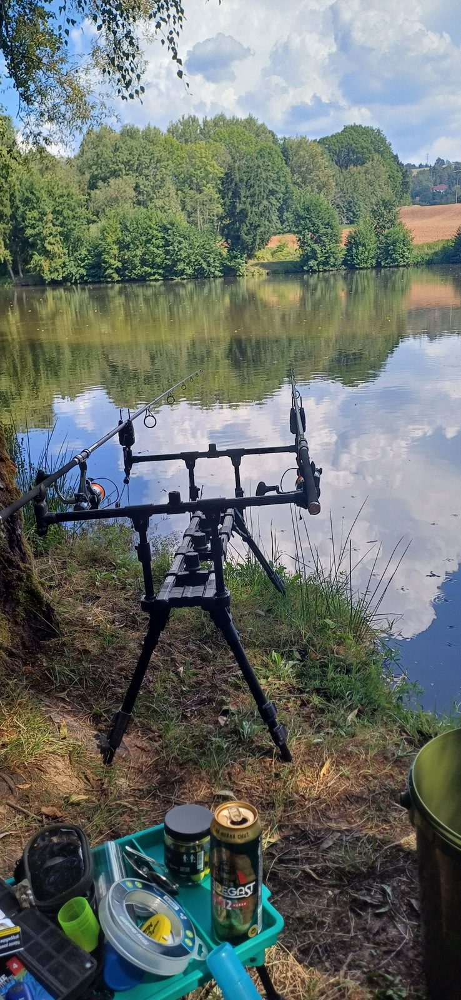
Un rod pod con mulinelli a bordo acqua (agosto 2024)
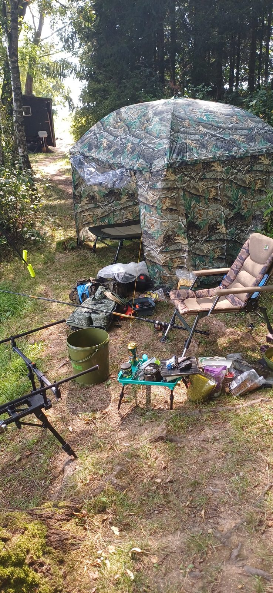
Un bivacco da pesca con ombrellone, poltrona e attrezzatura sulla riva (agosto 2024)
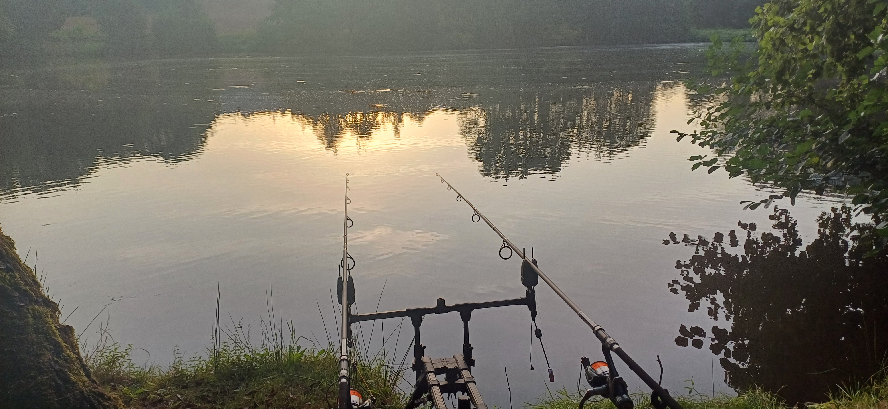
Un rod pod con due canne in riva all'acqua all'alba (agosto 2024)
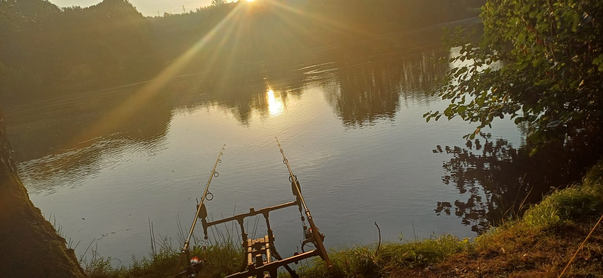
Un rod pod in riva all'acqua controsole all'alba (agosto 2024)
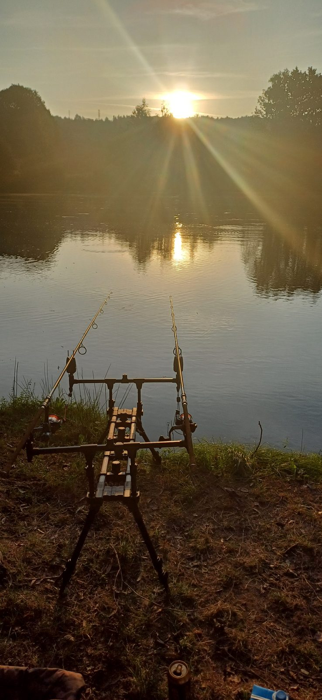
Un rod pod in riva all'acqua all'alba (agosto 2024)

Un pesce catturato in un guadino sulla riva (agosto 2024)
"Il miglior pesce è quello che aspetti al mattino col caffè in mano."